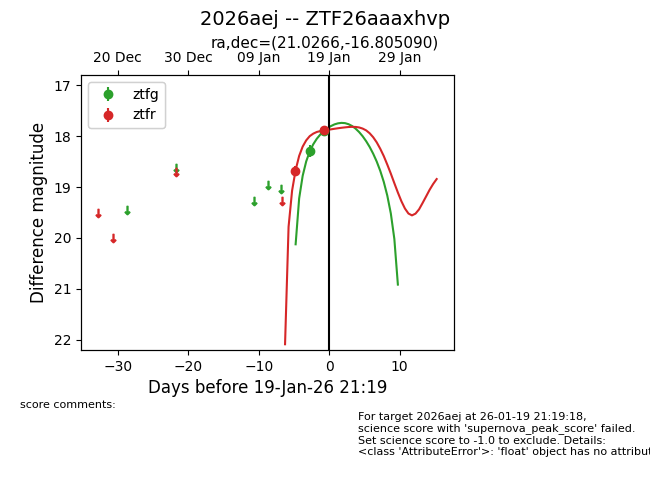
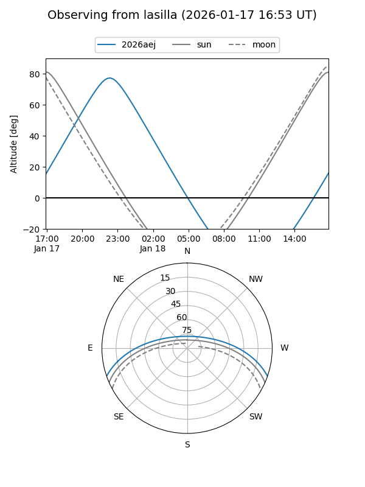
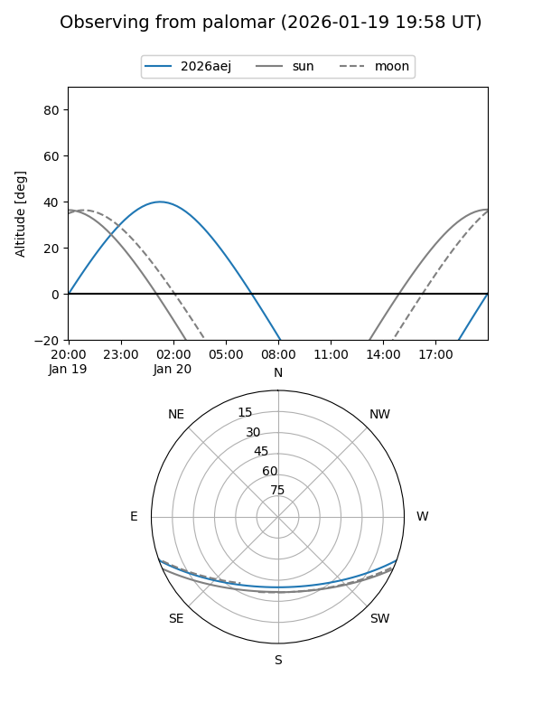
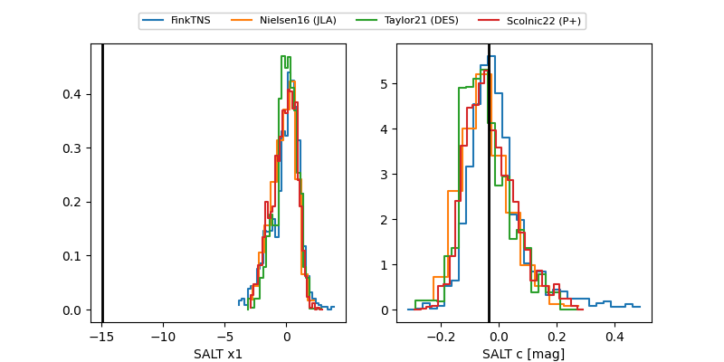

2026aej
Target 2026aej at 2026-01-19 21:21
Aliases and brokers:
FINK: link
Lasair: link
ALeRCE: link
TNS: link
YSE: link
alt names
ZTF26aaaxhvp (ztf,fink_ztf)
2026aej (tns,yse)
Coordinates:
equatorial (ra, dec) = 21.0266,-16.80509
equatorial (HMS+DMS) = 01:24:06.38,-16:48:18.33
galactic (l, b) = (160.8190,-77.20582)
Flags:
Photometry:
last ztfg=17.91, ztfr=17.89
2 ztfg, 2 ztfr detections
Lightcurve

Visibility


Additional plots
